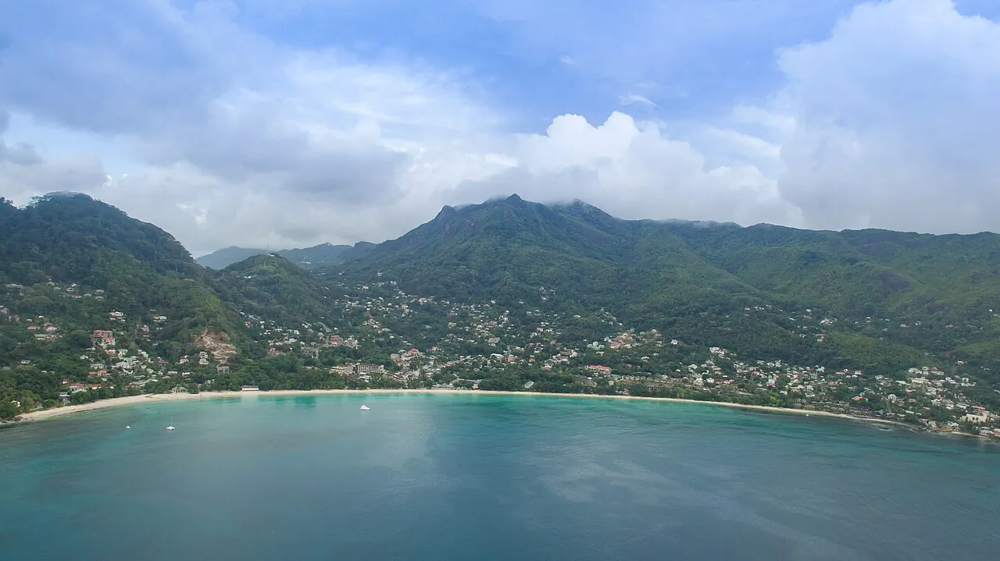

Beau Vallon
Mahé, Seychelles · baignade, plongée, snorkeling

Grande baie de sable blanc au nord-ouest de Mahé.
- Lieu
- Mahé, Seychelles
- Niveau
- Débutant
- Activités
- baignade, plongée, snorkeling
- Type d'eau
- Mer / océan
- Coordonnées
- -4.62, 55.42 (position approximative du secteur)
Dangers à connaître
- Courants d’arrachement dangereux possibles quand la mer est agitée ; peu de sauveteurs aux Seychelles.
- Jet-skis au large.
Le conseil d'Ocean Buddy
La période où la mer est la plus calme est à vérifier localement.
Ouvrir dans Ocean Buddy Télécharger sur l'App Store
Source : Fiche Ocean Buddy · septembre 2026 · à vérifier localement.